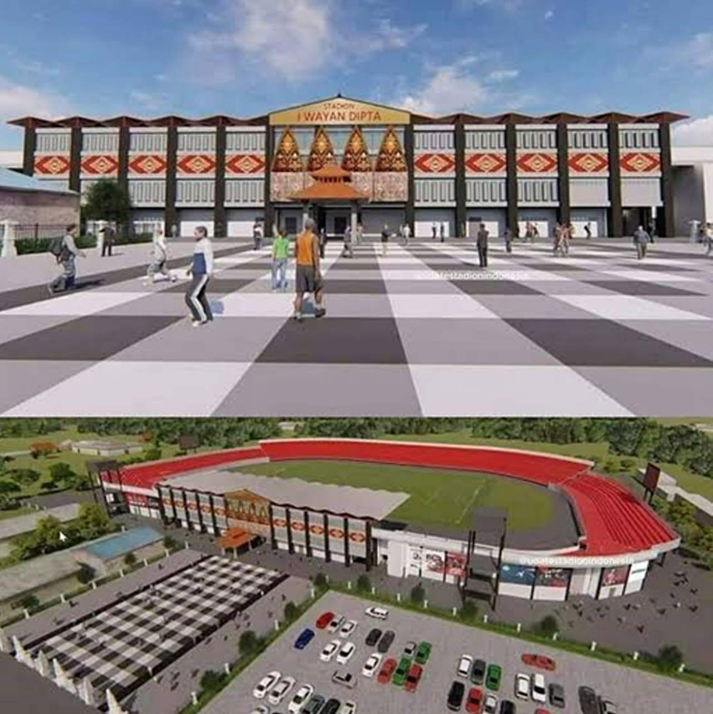

|

|
|
|
|
5 April, 2019
SPYROS menjadi pemenang untuk tender pengadaan dan pemasangan Sistem Waktu dan juga Papan Skor yang ditempatkan pada Pusat Akuatik Papua. Tempat Olahraga ini akan menjadi tuan rumah kompetisi renang dan menyelam dalam acara olahraga bergengsi, Pekan Olahraga Nasional (PON) 2020.

23 April 2019
Dengan bangga kami menginformasikan bahwa kami akan berpartisipasi dalam Indonesia Sport Expo & Forum (ISEF). Pameran & forum pertama di Indonesia yang akan mengintegrasikan gedung & teknologi dengan rencana pengembangan fasilitas olahraga dari sektor publik dan swasta di Indonesia, yang merupakan pasar terbesar di Asia Tenggara.
Kami akan menampilkan peralatan dan solusi paling inovatif dari merek yang kami wakili di Indonesia.
Kami bersiap untuk menyambut kehadiran Anda!

5 April, 2019
Dengan bangga kami mengumumkan bahwa SPYROS dan Figueras Seating Solutions telah menandatangani perjanjian kerjasama untuk pendistribusian semua produk Figueras di Indonesia terutamanya di venue Stadion Olahraga.
Figueras menunjuk Spyros sebagai distributor eksklusifnya karena pengetahuan kami di lapangan dan keahlian dalam memberikan solusi turn key.
Figueras International Seating adalah perusahaan global terkemuka yang memanfaatkan kemampuan teknik dan desain khusus untuk menghasilkan tempat duduk kelas atas yang inovatif untuk ruang publik dan serbaguna
Semua produk Figueras dibuat di fasilitas manufaktur seluas 30.000 m² di dekat Barcelona (Spanyol).

18 September 2019
Spyros adalah perusahaan pengadaan sekaligus yang akan menginstalasi Sistem Waktu dan Papan Skor untuk Pusat Akuatik dan Atletik di Kompleks Olahraga Ragunan di Jakarta Selatan.
Tidak hanya itu, Spyros juga mengintalasi Papan Skor untuk lapangan Sepak Bola, Bola Basket, Bola Voli, Voli Pantai, Lapangan Tenis, Bulu Tangkis, Futsal, Tenis Meja dan Takraw.
Kompleks Olahraga Ragunan ini dibangun pada tahun 1973 untuk menjadi Pusat Latihan Olahraga Pelajar provinsi DKI Jakarta. Saat ini dilakukan direnovasi untuk mengikuti standar federasi olahraga secara internasional.
21 Oktober 2019
Di SPYROS, kami memiliki komitmen yang kuat terhadap masalah lingkungan, sosial, dan tata kelola. Sebagai bagian dari agenda ESG kami, kami telah dianugerahi tiga sertifikat yang mencakup Sistem Manajemen Mutu (QMS - Quality Management System), Sistem Manajemen Lingkungan yang efektif (EMS - Environmental Management System), dan Sistem Manajemen Kesehatan dan Keselamatan Kerja, menurut ISO 9001, ISO 14001 dan OSHAS 18001.
Dewan direksi telah menetapkan pedoman EST yang jelas untuk Perusahaan dan akan mengawasi peluncuran beserta implementasinya.

22 April 2020
Pada April 2020, Tim Manajemen Proyek kami telah menyelesaikan serah terima Papan Skor dan Sistem Waktu untuk Kompleks Olahraga Ragunan, Jakarta. Di Kompleks Olarraga ini kami memasang Papan Skor untuk beberapa stadion, yaitu di stadion bulu tangkis, tenis meja, basket, sepak bola, takraw, tenis, futsal dan bola voli (outdoor, indoor dan voli pantai). Total ada 24 papan skor yang terpasang.
Untuk sistem pengaturan waktu, kami memasang pada Pusat Akuatik serta trek dan lapangan Atletik.
Selamat kepada Pemerintah Provinsi DKI Jakarta atas renovasi pusat latihan yang luar biasa ini, dan sukses untuk para atlet muda.

30 Juli 2020
SPYROS telah berhasil menyelesaikan serah terima proyek Arena Aquatic Papua.
Aquatic Center dibangun sebagai persiapan untuk Pekan Olah Raga Nasional (PON) 2022, Kejuaraan Olahraga Nasional di Indonesia.
Kami mulai bekerja di Papua sejak April 2019, sebagai bagian untuk mendukung PT Waskita Karya sebagai Kontraktor Utama. Spyros mengambil bagian dalam menyediakan Papan Skor dan satu set lengkap Sistem Waktu untuk kolam kompetisi, yang meliputi kolam ukuran Olimpiade, kolam polo air, kolam renang sinkronisasi dan kolam menyelam.
Meskipun ada pembatasan perjalanan Covid-19 yang diterapkan untuk lebih mengurangi risiko kasus infeksi di Papua, tim kami telah berhasil menyelesaikan proyek ini tepat waktu. Semua sudah selesai dilakukan dengan baik!
01 Maret 2021
I Wayan Dipta Gianyar merupakan stadion multi fungsi yang dibangun pada tahun 1977 berlokasi di wilayah Gianyar Bali. Stadion ini ditunjuk oleh Kementerian Olahraga dan Pemuda sebagai salah satu stadion yang akan menyelenggarakan Piala Dunia U-20 FIFA 2021. Pada tahun 2020, SPYROS sangat tersanjung terpilih sebagai salah satu pemasok papan skor untuk membantu stadion dengan memenuhi standar Piala Dunia U-20 FIFA 2021. Selain itu stadion ini juga merupakan tuan rumah bagi Tim Sepak Bola Bali United.
Selain menyediakan papan skor yang berkualitas, SPYROS juga akan memimpin tim untuk menyusun pemsangan papan skor bagi stadion sepak bola ternama yang berkapasitas sebanyak 25.000 tempat duduk ini.
Seiring kontrak yang berjalan, SPYROS saat ini sedang menyelesaikan proses pengadaan yang diharapkan akan selesai pada Maret 2021.
Meskipun sangat disayangkan, pesta olahraga ini akan ditunda hingga tahun 2023.

26 OKtober 2021
Pekan Olahraga Nasional (PON) XX 2021 Papua baru saja berakhir sepekan lalu namun kisah panjang hingga terselengaranya acara olahraga akbar tingkat nasional ini tidak bisa dilupakan begitu saja. Cobaan terberat dari acara ini tentunya wabah COVID 19 yang menyerang secara global hampir di 99% negara yang ada di dunia. Perhelatan yang seharusnya diadakan tahun 2020 pun mengalami kemunduran pelaksanaan hampir 1 tahun dengan alasan keamanan, kesehatan dan keselamatan semua pihak. Seiring semakin terkendalinya COVID 19, kepastian acara ini akhirnya menemukan ujung penantiannya.
Salah satu kunci kesuksesan penyelenggaraan PON XX 2021 ini adalah kuatnya persatuan dan kesatuan Bangsa Indonesia sebagai bangsa yang majemuk. Bahkan wakil presiden RI, bapak Ma’ruf Amin mengatakan bahwa PON XX 2021 ini merupakan PON tersulit dalam sejarah panjang PON dari awal hingga saat ini. Tapi ternyata tekad & dukungan bukan hanya warga Papua, tetapi semua pihak yang terlibat mampu merealisasikan acara ini. Hal ini selaras dengan semboyan “Torang Bisa!”
Spyros Eurotech Solutions sebagai salah satu pendukung acara ini-pun mengalami perjalanan yang cukup panjang & berliku dalam memberikan support terbaiknya. Tentunya sebagai salah satu anak bangsa, Spyros tidak ingin mengecewakan pihak-pihak yang memberikan kepercayaan besar ini. Satu demi satu tantangan berhasil ditaklukan oleh Spyros dan berujung dengan kisah yang manis dengan berjalannya PON XX Papua 2021 dengan lancar tanpa hambatan berarti.


26 OKtober 2021
Wabah Covid 19 menjadi suatu alasan terbesar hingga akhirnya terpilih 4 wilayah untuk pelaksanaan PON XX Papua 2021. Keempat wilayah tersebutadalah Kota Jayapura, Kabupaten Jayapura, Kabupaten Mimika, dan Kabupaten Merauke. Daerah-daerah ini dianggap relatif aman dari penularan COVID-19 sebab diukur berdasarkan cakupan vaksinasi rata-rata mencapai 60 persen dari populasi sebagai perlindungan tubuh dari risiko penularan. Hal ini menjadi penting karena perhelatan olahraga ini akan diikuti oleh lebih dari 6000 atlit dan official dari 34 propinsi yang ada di Indonesia.
Pembagian wilayah juga mengakibatkan terjadinya pembagian venue / sport -center yang digunakan untuk cabang-cabang olahraga yang dipertandingkan. Tak terkecuali bagi Spyros Eurotech Solutions yang mendapatkan kepercayaan untuk mensupport venue Aquatic dan Athletic. Kedua venue ini berada di Kota Jayapura untuk Aquatic dan Kota Timika (Kab. Mimika) untuk venue athletic. Jarak antara keduanya kurang lebih 458 km/284 mill atau kurang lebih 5 jam perjalanan dengan mobil. Bukan sebuah perjalanan yang mudah dikarenakan kontur jalanan yang berupa perbukitan. Tim teknis pun terpaksa dibagi dua untuk mempermudah pekerjaan.
Namun hal tersebut tidak menghalangi Spyros dalam melakukan tugasnya. Giant Scoring Board untuk Venue Aquatic dan Timing System di Venue Athletic terpasang dengan sempurna. Tidak ada halangan berarti dalam pengoperasiannya selama acara berlangsung. Tim teknis Spyros bekerja keras menyelesaikan pengerjaannya tepat waktu, tidak peduli waktu dan cuaca yang seringkali berubah-ubah dari panas ke hujan tanpa pertanda sebelumnya. Tentu hanya satu tujuan Spyros, memberikan hasil terbaik untuk acara ini. Apakah terwujud? Dengan adanya pengakuan dari PB PON bahwa Spyros sebagai salah satu pendukung PON XX Papua 2021 yang melakukan pekerjaannya dengan baik, Ya Spyros bisa mewujudkannya!